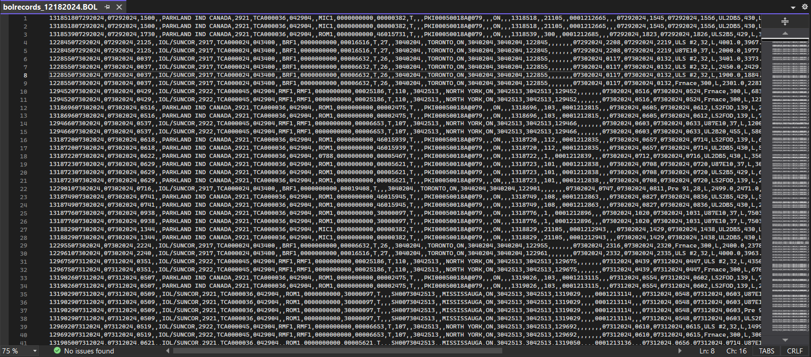

Wesley Renaud wrenaud@uoguelph.ca
DTN BOL is one of the main projects I worked on during this work term. The project was designed for a fuel company, Roma Fuels. The goal of this project is to access a file, daily, located remotely, which consists of information about a number of bills of lading. Once the file is located, it is downloaded locally and line-by-line, info for each of the BOLs is read. This information is read and entered into a SQL database. This program is run automatically once a day, and starts by clearing out all of the previous BOL records.

Some of the biggest challenges of this project were reading the BOL data from the file and automating the running of the program. Reading the data was difficult because the file is a simple CSV file in which each line has data for a different document, and each value in a row is for a different field in the document. It was crucial that I was populating the values for the documents correctly so that the SQL table would be populated correctly. Automating the task was particularly challenging because of the VPN which I needed to have turned on to access the SQL database. I had to learn how to coincide the activating of the VPN with the running of the program. This was my first time using Windows Task Scheduler for something like this, but the experience is one that will come in handy all of the times in the future when I have to schedule some program to run automatically.